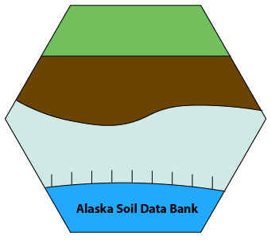

Alaska Soil Data Bank Project Metadata

Preface
This quarto book documents the metadata architecture for “The Alaska Soil Data Bank (ASDB): A database for delivering non-NRCS legacy data for digital soil mapping initiatives in Alaska” - USDA-NRCS SPSD Award #NR223A750025C013. The book is arranged in chapters, each of which deals with the metadata for one of three deliverables in the grant. Each of these deliverables also has a unique GitHub repository nested under the alaska-soil-data-bank organization. These deliverables are:
1. The Alaska Soil Data Bank (ASDB). We will acquire, curate, and centralize non-NRCS legacy data for the state of Alaska and stand up a database for continuing contributions on the G.E.M.S. platform of the University of Minnesota Supercomputing Institute. The ASDB will result in a harmonized dataset for use in digital soil mapping in Alaska and scripts will be written to export the data into a NASIS-readable format for ingestion.
2. AK Statewide Predictive Soil Order/Suborder Map. We will generate digital predictive soil order and soil suborder maps of the state of Alaska at a resolution of 30m.
3. Segmentation Analysis Approach to DSM for Katmai National Park and Preserve. We will utilize a novel landscape segmentation analysis approach to digital soil mapping for Katmai National Park and Preserve.
Key Personnel
- Nic Jelinski; Associate Professor, University of Minnesota (PI)
- Colby Brungard; Associate Professor, New Mexico State University (Co-PI)
- Sabine Grunwald; Professor, University of Florida (Co-PI);
- Matt Macander; Senior Scientist, ABR, Inc. (Co-PI)
Additional Collaborators
Funding Source and RFP
This project was awarded for a proposal submitted to the USDA-NRCS 2022 Soil Science Collaborative Research Proposals RFP
You can find the original RFP here https://www.grants.gov/web/grants/view-opportunity.html?oppId=337972.